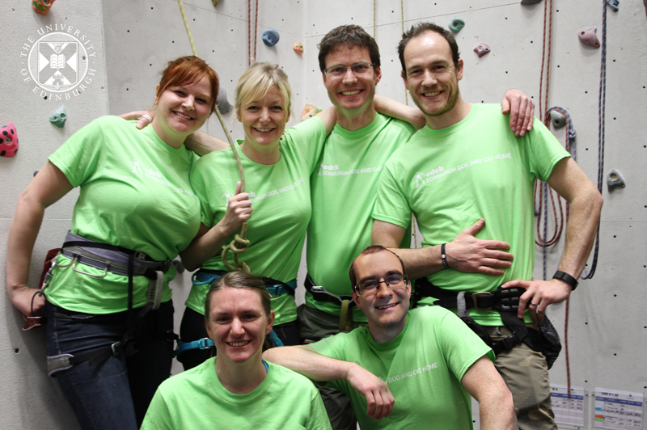

Big Leap Charity climb - 14th May, 2016

Follow us live as we attempt to
climb the height of the U.K.'s 3 peaks
in 6 hours to raise funds for the Edinburgh Dog and Cat Home. Due to start climb at 12.30pm BST.
Loading ...
Tweets by @TheDickVet